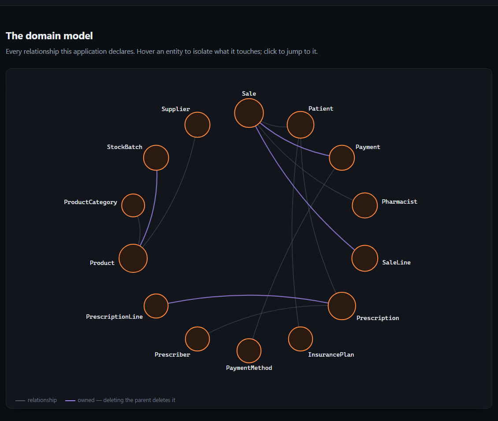

The same extraction, for a person
Real output — PharmacyDemo, the repository's synthetic fixture

A map of your domain model that most teams have never seen.
It lives in one person's head — which is what leaves when they do.